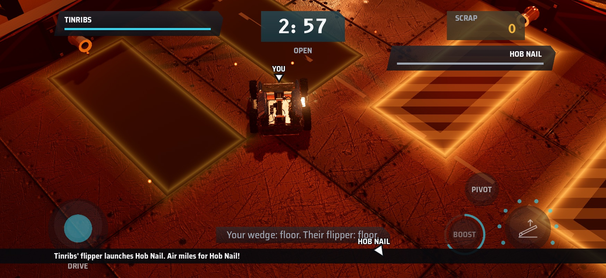
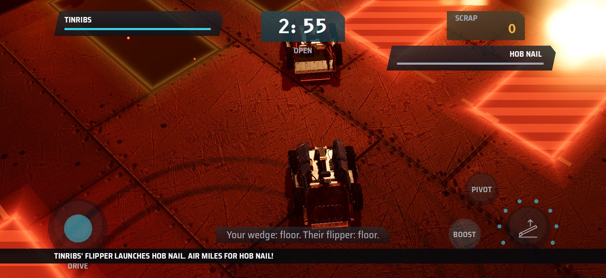
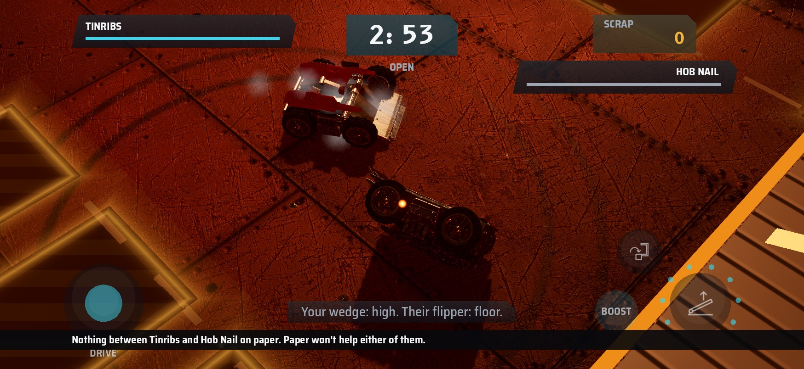
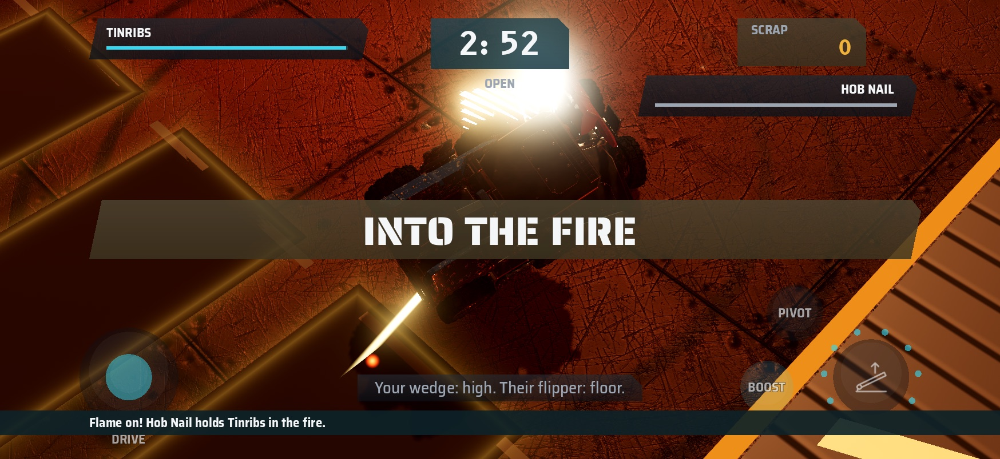

The ticker now has a voice, in text. Every line is ours, written for this game, and fires only when its facts are true: a flip line needs a machine that stayed upside down, a "knocked the wheel off" line needs a wheel that really came off, a "drove in on its own" line needs nobody near it. Below: how three real fights read, the ticker on the phone, and a sample of every kind of line.
Three real AI v AI career fights, run headless on the merged tree, with the commentary exactly as it would reach the ticker. The plain rows are the fight's own log so you can check each line against what happened.
wedge/4wd/flipper v box/4wd/horizontal_spinner, seed 11. Bold rows are what the ticker said; the rest is the fight log (parts off, flips, stages, payoffs).
| 0.0 | PHASE open |
| 0.0 | And keep an eye on THRESHER in the corner. It's keeping an eye on you.prediction |
| 0.0 | Here we go, then. Tinribs against Clatterbox.fight_start |
| 4.2 | Clatterbox is spun up and looking for customers.spinning_up |
| 5.8 | Clatterbox lands the first one, and Tinribs felt it.first_blood |
| 8.2 | Tinribs is held down, and Clatterbox isn't letting go.pinned |
| 12.8 | Clatterbox is riding up Tinribs' ramp. Wheels off the floor!wedge_under |
| 13.1 | Clatterbox is upside down |
| 13.1 | Clatterbox is back upright |
| 15.3 | Clatterbox is upside down |
| 15.6 | Clatterbox is upside down!flipped |
| 16.0 | Clatterbox is back upright |
| 17.4 | Up it gets! Clatterbox rights itself.self_right |
| 23.0 | Clatterbox is spinning down. Tinribs should get in there.spin_lost |
| 26.4 | That's a proper wallop from Clatterbox.big_hit |
| 29.9 | Tinribs is trapped. Wriggle, Tinribs, wriggle!pinned |
| 33.3 | PAYOFF ONTO THE SPIKES on Clatterbox by Tinribs |
| 33.3 | Spiked! Tinribs parks Clatterbox on the pins.payoff_spikes |
| 33.5 | Clatterbox is upside down |
| 33.5 | Clatterbox is back upright |
| 35.0 | Clatterbox's horizontal spinner bites and Tinribs goes skipping across the floor!big_hit |
| 40.0 | PAYOFF ONTO THE SPIKES on Tinribs by Clatterbox |
| 40.0 | Tinribs gets the acupuncture treatment, courtesy of Clatterbox.payoff_spikes |
| 44.8 | Full speed on Clatterbox's horizontal spinner. Nobody stand near that.spinning_up |
| 45.0 | STAGE 1 HAZARDS UP |
| 45.3 | Tinribs loses wheel_fl (Clatterbox) |
| 45.4 | The front left wheel has left the building. Tinribs carries on without it.part_off |
| 46.5 | Tinribs loses wheel_rr (the arena) |
| 47.9 | Tinribs loses armour_top (Clatterbox) |
| 47.9 | The top armour is off! Clatterbox is taking Tinribs apart.part_off |
| 51.7 | Oh, Tinribs felt that one!big_hit |
| 54.5 | Tinribs weapon jammed |
| 54.6 | Nothing coming from Tinribs' flipper. That's broken.weapon_jammed |
| 55.0 | Clatterbox is upside down |
| 55.7 | Clatterbox is back upright |
| 61.4 | The horizontal spinner on Clatterbox is winding down. Opportunity knocks.spin_lost |
| 72.0 | Clatterbox leans on Tinribs. That's a very heavy hug.pinned |
| 90.0 | STAGE 2 GRINDERS WAKE |
| 90.0 | Grinders on! The Yard just grew teeth.stage_wake |
| 104.9 | Tinribs wants to leave. Clatterbox has other ideas.pinned |
| 115.6 | Clatterbox's horizontal spinner has lost its speed. Now's the moment, Tinribs!spin_lost |
| 118.7 | Tinribs loses armour_rear (Clatterbox) |
| 118.7 | Look at that, Tinribs' rear armour bouncing across the floor.part_off |
| 120.0 | PHASE endgame |
| 120.0 | THRESHER is out of its corner! Everybody look busy.house_bot_out |
| 128.1 | Pinned! Tinribs is going nowhere for the moment.pinned |
| 155.0 | STAGE 4 FINAL SECONDS |
| 155.0 | Into the final seconds. Win it now or hand it to the judges.stage_final |
| 164.8 | Too friendly by half. The Marshal parts Tinribs and Clatterbox.lockup_tow |
| 170.0 | Ten seconds left! Last orders!last_ten |
| 174.2 | Break! The Marshal untangles the pair of them.lockup_tow |
| 180.0 | Nobody finished it, so the judges will. Over to them.judges |
| 180.0 | No doubts there. Clatterbox gets the verdict.verdict_clear |
box/4wd/horizontal_spinner v wedge/4wd/flipper, seed 22. Bold rows are what the ticker said; the rest is the fight log (parts off, flips, stages, payoffs).
| 0.0 | PHASE open |
| 0.0 | Welcome to Drop Zone. Penny Dread and Tinribs, and one of them won't enjoy it.prediction |
| 0.2 | Away they go!fight_start |
| 3.5 | Tinribs has wound itself right up. Nasty.spinning_up |
| 4.2 | Tinribs opens the account against Penny Dread.first_blood |
| 7.9 | Oh, Penny Dread felt that one!big_hit |
| 10.7 | Penny Dread slides underneath. Tinribs has lost its grip.wedge_under |
| 10.9 | Tinribs is upside down |
| 11.0 | Tinribs is back upright |
| 13.5 | Tinribs is upside down |
| 13.8 | Penny Dread gets underneath and Tinribs goes over. Textbook.flipped |
| 14.1 | Tinribs is back upright |
| 16.4 | Tinribs is upside down |
| 16.7 | Tinribs is back upright |
| 17.2 | Tinribs is upside down |
| 18.4 | Tinribs is back upright |
| 19.6 | Tinribs is trapped. Wriggle, Tinribs, wriggle!pinned |
| 27.3 | Wallop! Penny Dread will be feeling that one in the morning.big_hit |
| 31.9 | Spinner connects! Penny Dread bounces like a dropped tea tray.big_hit |
| 35.0 | The horizontal spinner on Tinribs is at full chat.spinning_up |
| 38.1 | That wedge is doing its job. Tinribs is on the ramp.wedge_under |
| 38.4 | Tinribs is upside down |
| 38.9 | Tinribs is back upright |
| 39.1 | Tinribs is upside down |
| 39.6 | Tinribs is back upright |
| 40.4 | Tinribs' horizontal spinner has lost its speed. Now's the moment, Penny Dread!spin_lost |
| 45.0 | STAGE 1 HAZARDS UP |
| 45.0 | Hazards on! Somebody is going to find out the hard way.stage_hazards |
| 49.0 | That's a pin from Tinribs. Penny Dread is running out of room.pinned |
| 53.0 | That's a proper wallop from Tinribs.big_hit |
| 58.0 | Tinribs' horizontal spinner slows right off. It'll need a moment.spin_lost |
| 61.9 | PAYOFF INTO THE PIT on Tinribs by Penny Dread |
| 61.9 | Bye bye, Tinribs! That's the pit.payoff_pit |
box/4wd/axe v wedge/4wd/flipper, seed 33. Bold rows are what the ticker said; the rest is the fight log (parts off, flips, stages, payoffs).
| 0.0 | PHASE open |
| 0.0 | Hob Nail is built like a post box. Tinribs needs to post something through it.prediction |
| 0.2 | Off they go, and nobody's hanging about.fight_start |
| 5.7 | First blood to Tinribs' axe.first_blood |
| 6.9 | Tinribs is upside down |
| 7.0 | Tinribs is back upright |
| 7.6 | Under it goes! Hob Nail's wedge has Tinribs up on its toes.wedge_under |
| 10.2 | Tinribs has wedged itself. Wheels spinning, going nowhere.stuck |
| 21.6 | Timber! The axe lands square on Hob Nail.big_hit |
| 21.8 | Tinribs is upside down |
| 22.6 | Tinribs is back upright |
| 25.1 | Tinribs has Hob Nail pinned!pinned |
| 25.3 | Tinribs is upside down |
| 25.8 | Tinribs is back upright |
| 26.5 | Tinribs is upside down |
| 26.7 | Tinribs is back upright |
| 27.2 | Tinribs is upside down |
| 27.4 | Tinribs is back upright |
| 27.5 | Tinribs is upside down |
| 27.6 | Tinribs is back upright |
| 30.5 | Tinribs is riding up Hob Nail's ramp. Wheels off the floor!wedge_under |
| 36.0 | Tinribs has parked itself on the furniture.stuck |
| 45.0 | STAGE 1 HAZARDS UP |
| 45.0 | The hazards are live. Watch where you're driving.stage_hazards |
| 51.3 | Hob Nail loses armour_top (Tinribs) |
| 51.4 | Hob Nail loses armour_rear (the arena) |
| 51.4 | Tinribs rips the top armour away. That'll need more than glue.part_off |
| 58.5 | Lovely low driving from Hob Nail. Tinribs is up in the air.wedge_under |
| 63.7 | Stuck fast, Tinribs. There we go, a little nudge.stuck |
| 68.0 | PAYOFF INTO THE FIRE on Tinribs by Hob Nail |
| 68.0 | Tinribs is roasting, and Hob Nail will take that.payoff_fire |
| 76.5 | Tinribs loses wheel_rl (the arena) |
| 76.5 | Tinribs loses wheel_fl (the arena) |
| 76.5 | Tinribs leaves its rear left wheel in the hazard. Donation received.part_off |
| 83.0 | Did Tinribs not see that? It certainly felt it.hazard_self |
| 89.9 | Hob Nail has had a navigational mishap. A painful one.hazard_self |
| 90.0 | STAGE 2 SIDE JETS LIT |
| 92.2 | The side jets are lit! It's getting warm in the Furnace.stage_wake |
| 95.1 | Oh, Hob Nail is caught on something. The arena helps it out.stuck |
| 95.7 | That's the end of Tinribs. Knockout to Hob Nail!knockout |
The ticker keeps the design system: the ink strip along the bottom, no rules or accents, Saira Semi Condensed, sliding in from the right. Lines stay up 1.8 to 3.2 s depending on length.




Up to six per key, with sample names. Amber tags are the facts a line needs beyond the names; "rare" lines are weighted down.
Before the bell. attacker = the machine the facts favour (or the player's when even), victim = the other, weapon = attacker's. Flags: even, favourite, armour_edge, record_edge, same_weapon, spin_vs_lift, rematch, house.
+ 18 more
The player's machine through the gate. attacker = the machine, weapon = its weapon.
+ 2 more
The opponent through the gate. attacker = the machine, weapon = its weapon.
+ 1 more
The bell (after 3, 2, 1, FIGHT). attacker = the player's machine, victim = the opponent.
+ 1 more
The first real blow between the two machines. attacker/victim/weapon (attacker's). Flags: wk=<kind>, spin_weapon, src_burn.
+ 2 more
A blow at the FX layer's heavy severity. attacker/victim/weapon (attacker's). Flags: wk=<kind>, spin_weapon, src_burn, house (attacker is the house bot), attacker=<name>, victim=<name>.
+ 50 more
A real part came off (armour plate, wheel). part = its name, victim = its owner, attacker = who did it when a machine did. Flags: part_wheel, part_armour, part_top, part_face, hazard, house.
+ 14 more
A pin that has held 0.6 s. attacker = the machine holding, victim = the one pinned.
+ 2 more
A machine has gone upside down. victim = it. attacker = the machine that touched it inside 1.5 s, if any. Flags: self (nobody near), wk=<attacker's kind>, house.
+ 11 more
An inverted machine is back upright. victim = it.
A wedge chassis in contact with the other machine, which is lifted off the floor and upright. attacker = the wedge, victim = the lifted one.
A spinner, drum, full body spinner or saw has reached full speed. attacker = its owner, weapon = it. Flags: wk=<kind>, spin_weapon.
+ 3 more
A spun-up weapon has fallen back below the AI's spun-down line. attacker = its owner, victim = the other machine, weapon = it. Flags: after_hit (it was in a blow inside 0.6 s), spin_weapon, wk=<kind>.
A weapon has reached zero and jammed for the rest of the fight. victim = its owner, weapon = it. Flags: player. Once per machine.
+ 1 more
A flame has knocked a weapon's electrics out for a while. victim = its owner, weapon = it.
A machine that was 20 %+ behind on condition has drawn level or gone ahead. attacker = the comer, victim = the other. Once per machine.
+ 2 more
8 s or more with no contact and no blow. attacker/victim = the two machines, seconds = how long. Flags: apart (more than 3 m apart).
+ 7 more
Ten seconds left on the clock.
A machine hurt by the arena with nobody in contact inside 3 s: it drove there itself. victim = it.
+ 2 more
The arena's unstick nudge: a machine wedged on the scenery, away from its opponent. victim = it.
Stage 1, HAZARDS UP. arena.
Stage 2, the arena's own wake word. arena, word. Flags: arena=<id>.
+ 9 more
The final stage (25 s left). arena, word. Flags: arena=<id>.
The endgame, in an arena without a pit and without a house bot (its release says the endgame when there is one).
Drop Zone's endgame: the pit opens.
The player's machine has driven into the house bot's corner. victim = it, house_bot.
The house bot is on the floor. house_bot. Flags: endgame (released at the endgame), idle (sent in because nobody was fighting).
+ 4 more
A machine shoved onto the spikes (credited). attacker = who did it, victim.
A machine fed into a grinder (credited). attacker, victim.
A machine driven into a flame jet (credited). attacker, victim.
A machine put under a ram (credited). attacker, victim.
A machine in the pit. attacker = who put it there (empty when nobody did). Flags: self.
+ 2 more
A hazard finishes a machine off (credited). attacker, victim.
A machine out of the arena. attacker = who put it there (empty when nobody did). Flags: self.
+ 3 more
A machine shoved into a hazard with no kind of its own. attacker, victim.
The Marshal tows two locked machines apart. attacker/victim = the two.
The Marshal starts a knockout count on an immobile machine. victim = it.
The count reaches the end. victim = the machine counted out, attacker = the winner.
The Marshal sprays out a fire. victim = the machine it sprays.
The Marshal drone takes a knock and wobbles.
After the result: the house bot's finishing ritual on the loser. house_bot, victim. Flags: hazard (it shoves the loser into a hazard).
+ 2 more
After the result: the house bot lands a late hit. house_bot, victim.
+ 2 more
The Marshal cards the house bot. house_bot.
A knockout. attacker = the winner, victim = the machine knocked out. Flags: inverted (it ended upside down).
+ 2 more
A component kill (the core, or everything that drives, is gone). attacker = the winner, victim = the loser. Flags: self (its own overcharged weapon cooked the core), hazard (the arena did the last of it).
+ 3 more
The bell with both still going: it goes to the judges. attacker/victim = the two.
A clear judges' decision (margin over 2 points of 10). attacker = the winner, victim = the loser, margin.
A close judges' decision (margin 2 points or under). attacker = the winner, victim = the loser, margin.
POWER DOWN, the stop word.